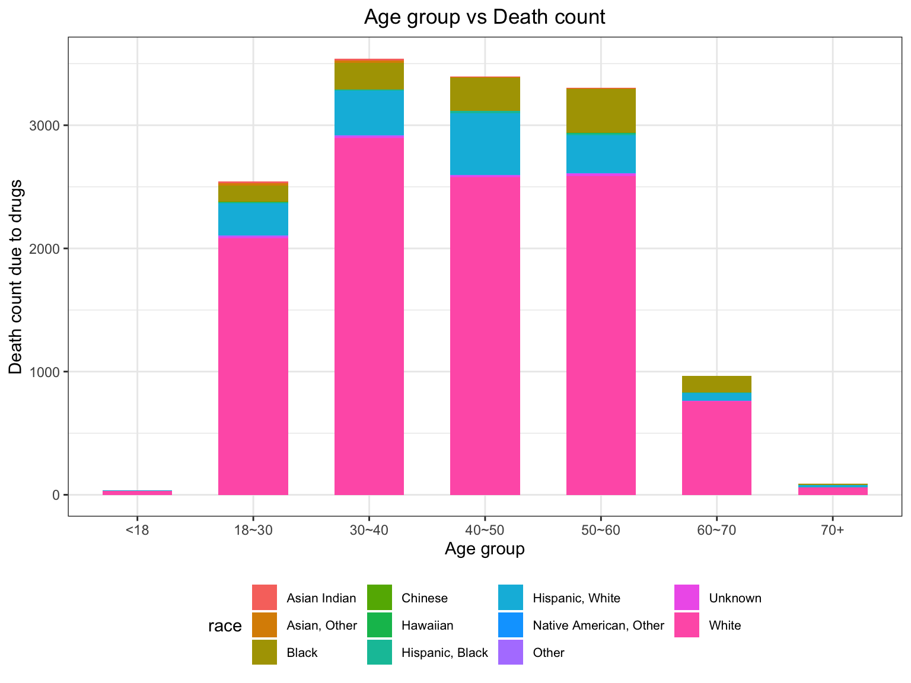

drug_df = read_csv("./data/Accidental_Drug_Related_Deaths_2012-2018.csv") %>% janitor::clean_names() %>% mutate(
date = as.character(date)
) %>% separate(date, into = c("month", "day", "year"), sep = "/") %>% mutate(
year = unlist(strsplit(year, " "))[1],
year = ifelse(is.na(month), NA, as.numeric(year)),
day = as.numeric(day),
month = factor(month.name[as.numeric(month)], levels = month.name),
race = as.factor(race),
sex = as.factor(sex)
) %>% separate(injury_city_geo, into = c("injury_city", "injury_geo"), sep = "CT") %>% separate(injury_geo, into = c("inj_longitude", "inj_latitude"), sep = ",") %>% mutate(
inj_longitude = as.numeric(str_remove(inj_longitude, "\\(")),
inj_latitude = as.numeric(str_remove(inj_latitude, "\\)")),
injury_city = str_remove(injury_city, "\\,")
) %>% select(-date_type)## Parsed with column specification:
## cols(
## .default = col_character(),
## Age = col_double()
## )## See spec(...) for full column specifications.## Warning: Expected 2 pieces. Additional pieces discarded in 9 rows [267,
## 1069, 1482, 1812, 2121, 3003, 3036, 5077, 5105].drug_df = drug_df %>% .[!is.na(drug_df$race), ]
drug_df %>% .[!is.na(drug_df$age), ] %>% mutate(
age_group = ifelse(age<18, "<18", ifelse(age<30 & age>=18, "18~30", ifelse(age<40 & age >=30, "30~40", ifelse(age<50 & age>=40, "40~50", ifelse(age< 60 & age>=50, "50~60", ifelse(age<70 & age >= 60, "60~70", "70+"))))) )
) %>% mutate(age_group = as.factor(age_group)) %>% ggplot(aes(x = age_group, fill = race)) + geom_histogram(stat = "count", width = 0.6) + labs(title = "Age group vs Death count", x = "Age group", y = "Death count due to drugs") + theme_bw() + theme(plot.title = element_text(hjust = 0.5), legend.text = element_text(size = 8)) + guides(col = guide_legend(nrow = 2))## Warning: Ignoring unknown parameters: binwidth, bins, pad